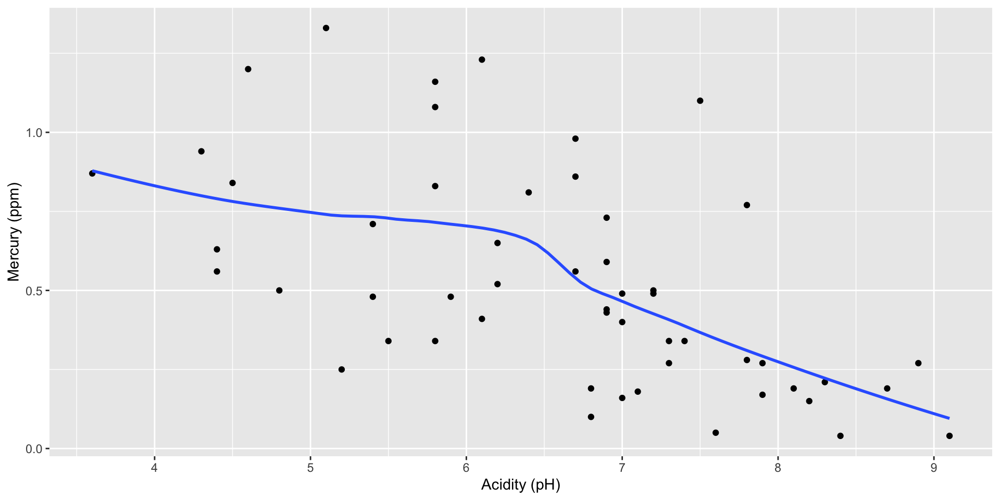
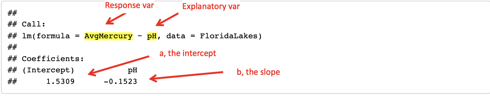

Linear regression: predicting the value of one quantitative variable from another
Obtain a scatterplot of the data to investigate the relationship between ph and AvgMercury.

The process of fitting a line to a set of data is called linear regression and the line of best fit is called the regression line.
The estimated regression line is \[ \hat y = a +bx \] where \(x\) is the quantitative explanatory variable and \(\hat y\) is the predicted quantitative response.
The regression equation can be used to predict \(y\) for a given value of \(x\).
The observed response variable, \(y\), is the response value for a particular data point.
The predicted response variable, \(\hat y\), is the reponse value that would be predicted for a given \(x\) value based on a model.
The best fitting line is the one which makes the predicted values closest to the actual values.
The residual for each data point is \[ \text{observed}-\text{predicted}=y-\hat y \]
The residual is also the vertical distance from each point to the fitted line.
Try it yourself: Rossman/Chance regression applet
\[ \text{sum of (residuals}^2)=\sum_{i=1}^n (y_i-\hat y_i)^2 \]
Note: The “regression line” and the “least squares line” are the same thing.
The estimated regression line is \[ \hat y = a + bx \]
Slope (b): increase in predicted \(y\) for every 1 unit increase in \(x\).
Intercept (a): predicted \(y\) value when \(x=0\)
Note: In practice, interpretation of the slope is typically most important.
Use the lm() command to fit a linear regression model with R.
See the annotated output below: 
The least squares regression equation is \[ \widehat{\mbox{AvgMercury}} = 1.531 -0.152(\mbox{pH}) \]
Use R to plot the regression line on the scatterplot:
gf_smooth() with method="lm" for linear modelObtain and print all predictions and residuals after fitting the model:
Important
You can use R to get the predicted values and residuals, but be sure you know how to compute them by hand calculator using the regression equation. See the regression help sheet for more details.
Do not extrapolate! Do not use the regression equation or line to predict outside the range of \(x\) values available in your data.
Only use the regession line if the association is approximately linear. Always plot your data!
Beware of outliers! Outliers (especially values that are extreme on the \(x\) axis) can be very influential on the regression line.
Correlation is not causation \(\ldots\) and neither is regression! Higher values of \(x\) may correspond to higher (or lower) predicted values of \(y\), but this does not mean that changing \(x\) will cause \(y\) to increase or decrease.